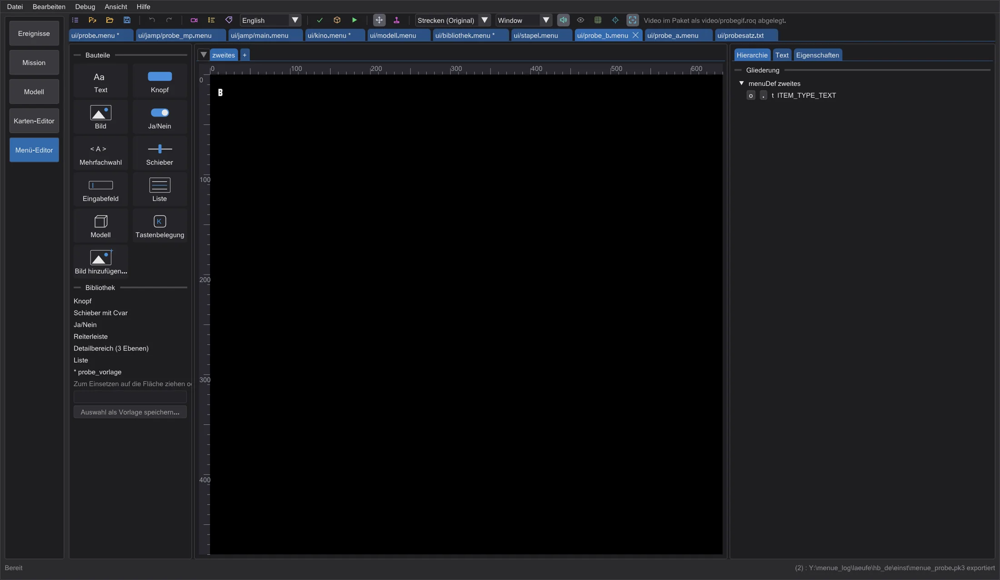
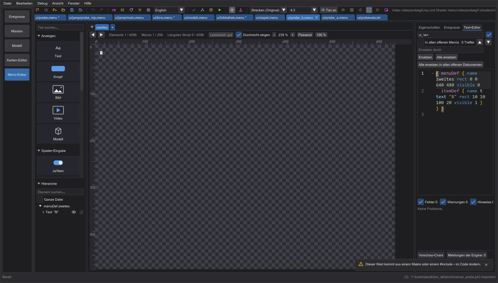
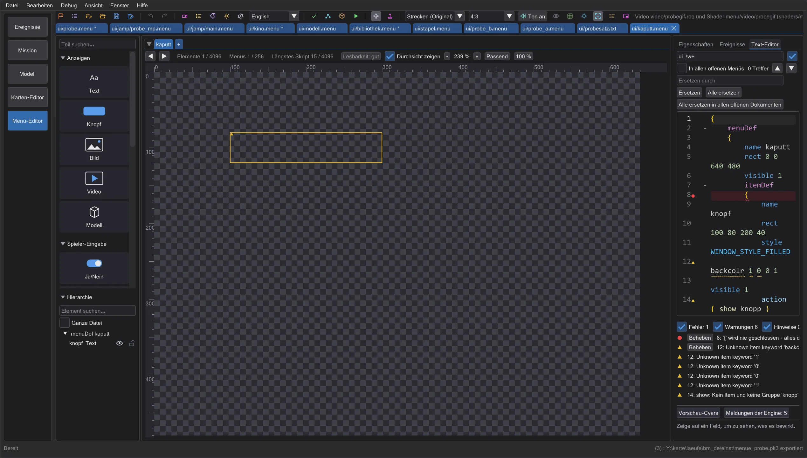
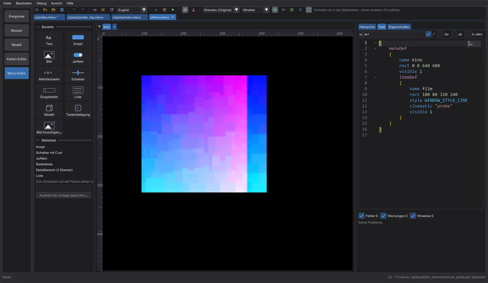
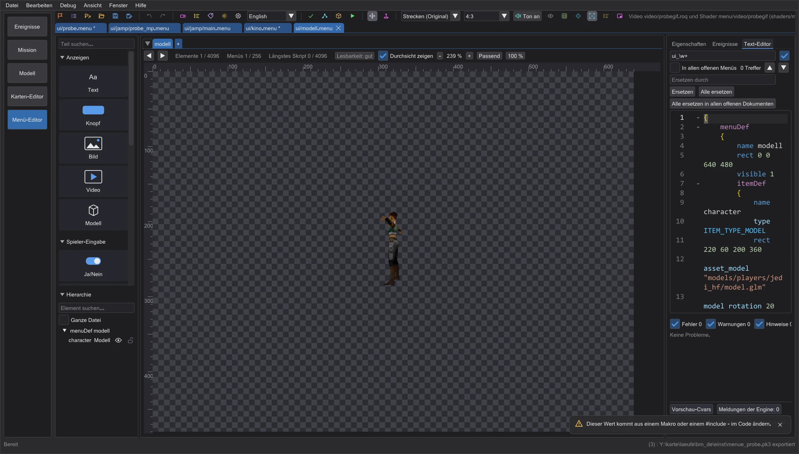
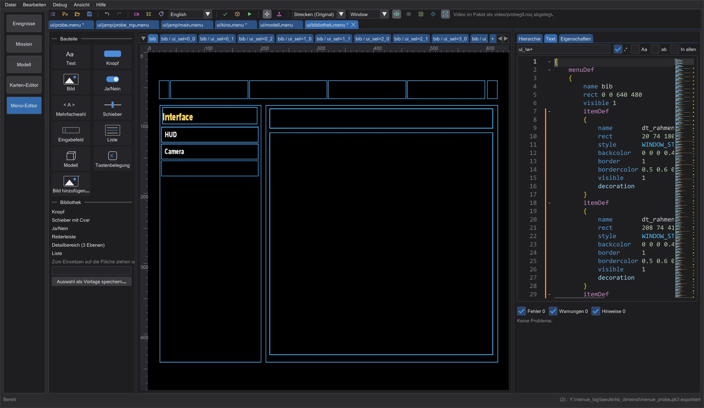
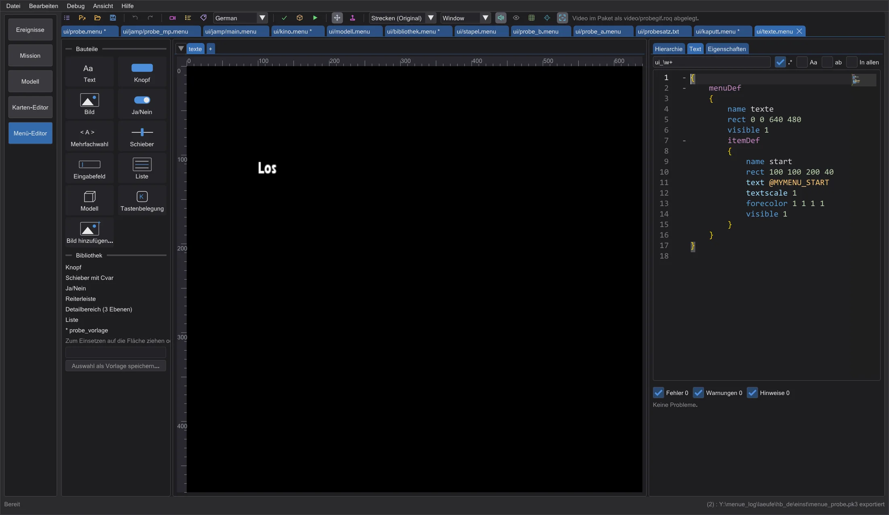

Menü-Editor: Vorschau, Prüfungen und Paket
Die rechte Spalte mit Reitern, die Live-Diagnose beim Tippen, Videos, 3D-Modelle und Lichtschwerter wie im Spiel, die Bauteil-Bibliothek, Texte in mehreren Sprachen, Klänge, die Prüfungen für das Spiel, ein Test im Spiel und Schriften aus TrueType.
Aufteilung: Fläche in voller Höhe#




Die rechte Spalte enthält Hierarchie (Menüs, Gruppen und Items; das Auge blendet ein Item nur in der Vorschau aus, das Schloss hält es fest, Ziehen ändert die Zeichenreihenfolge), Text (der Code-Editor, darunter die Probleme) und Eigenschaften (Eigenschaften, Cvars, Meldungen der Engine und das Skript-Protokoll als Abschnitte). Die Breite stellt der Teiler ein; Reiter und Breite bleiben gespeichert. Ein Klick auf der Fläche setzt den Textcursor auf den itemDef, auch wenn gerade ein anderer Reiter offen ist - beim Wechsel zu Text steht die Zeile da. Das alte Layout mit dem Text unten gibt es in den Einstellungen (Text-Editor unten (altes Layout)), ebenso Lange Zeilen im Text-Editor umbrechen (sonst werden lange Zeilen mit Umschalt + Mausrad seitwärts gescrollt).
Live-Diagnose#

Während du tippst, wird das Menü einen Augenblick später im Hintergrund geprüft. Eine Wellenlinie markiert die genaue Stelle - rot für Fehler, gelb für Warnungen, blau für Hinweise -, im Rand steht ein Symbol; darüber erscheint die Meldung: der Wortlaut des Spiels, wo es einen gibt (Unknown item keyword 'backcolr'), dazu eine kurze Erklärung. Die Liste der Probleme unter dem Text springt zur Stelle und wählt das Item auf der Fläche; Items mit Fehlern und Warnungen sind dort umrandet.
- Klammern
{ }und( )und Anführungszeichen: fehlend, überzählig oder falsch gepaart - die öffnende und die schließende Stelle; die Einrückung zeigt, wo eine Klammer fehlt. - Unbekannte Schlüsselwörter je Fassung, Zahlen, wo der Einzelspieler still 0 liest, doppelte menuDef-Namen, Ziele von open/close/show/hide/setfocus, die es nicht gibt, Cvars, die nach einem Tippfehler eines bekannten Cvars aussehen.
- Die Prüfungen für das Spiel (dieselben Regeln wie Für das Spiel prüfen): Grenzen, nie sichtbare Items, fehlende Dateien.
- Beheben in der Liste oder Strg+. am Cursor wendet eine Schnellkorrektur an, wo die Antwort eindeutig ist: die fehlende Klammer, das richtige Schlüsselwort, eine ähnliche vorhandene Datei, den bekannten Cvar. Rückgängig nimmt sie zurück.
Videos, Modelle und Lichtschwerter#




cinematic und videoMap spielen RoQ-Videos; Video importieren wandelt ein Video oder GIF nach RoQ und legt es nach video/. ITEM_TYPE_MODEL zeigt das Modell mit Kamera, Licht und Drehung des Spiels; das Figurenmenü baut den Spieler aus den Cvars und den Feedern (Spezies, Köpfe, Farben) wie das Spiel. Lichtschwerter liegen auf der Seite, Griff und Klingen aus der .sab: Länge, Radius, Klingenzahl, Einzel/Stab, Farbe - Leuchten und Kern wie der Renderer. Movie Duels folgt cg_SFXSabers mit allen Arten (siehe die nächste Seite).
Bibliothek, Detailbereich und Menüsätze#

Bibliothek enthält fertige Teile (Knopf, Schieber mit Cvar, Ja/Nein, Reiterleiste, Detailbereich in drei Ebenen, Liste); auf die Fläche ziehen oder doppelklicken. Auswahl als Vorlage speichern macht die Auswahl zur eigenen Vorlage. Ganzen Menüsatz öffnen (menus.txt) öffnet alle Dateien der menus.txt; open in einem Skript wechselt dann in die Datei des Menüs.
Texte in mehreren Sprachen und Klänge#

Texte listet deine eigenen @-Texte in jeder Sprache des Spiels und die @-Schlüssel, die das Menü benutzt (fehlende legt ein Klick an). Sie kommen ins Paket als strings/<Sprache>/<PAKET>.str (Jedi Academy, Movie Duels) bzw. strip/<paket>.sp (Jedi Outcast). Das Sprachfeld daneben schaltet die Vorschau um. Im Bedienen spielt das Menü seine Klänge wie das Spiel - soundLoop, play, playlooped, den Fokusklang des Items oder aus assetGlobalDef (Klänge schaltet sie ab).
Prüfen, Ausgeben und im Spiel testen#
Für das Spiel prüfen prüft alle offenen Menüs für Jedi Academy, Jedi Outcast und Movie Duels: die Grenzen jeder Fassung (Items je Menü, Menüs, Skriptlänge, Mehrfachwerte, Farbbereiche, Listenspalten - was darüber liegt, verwirft das Spiel), nie sichtbare Items, fehlende Bilder, Shader, Modelle, Videos, Schriften und Klänge und Schlüsselwörter oder Item-Typen, die eine andere Fassung nicht kennt. .pk3 exportieren schreibt alle offenen Menüs oder mit Nur Änderungen exportieren nur die geänderten - jeweils mit deinem Paket (Bilder, Videos, Texte, Schriften) und mit einer Warnung, wenn das Spiel etwas verlieren würde.
Im Spiel testen legt die geänderten Menüs nach menuetest im Einstellungsordner - nie in den Spielordner - und startet das Spielprogramm neben den Spielordnern mit fs_homepath dorthin, sodass deine Dateien die des Spiels ersetzen. Bei einem Programm, dem sich kein eigener Ordner geben lässt, wird gefragt, bevor etwas in einen Mod-Ordner geschrieben wird.
Schriften aus TrueType#
Schrift aus TTF macht aus einer .ttf oder .otf eine Spielschrift: fonts/<name>.fontdat (genau das Format, das das Spiel liest) und fonts/<name>.tga mit allen Zeichen der Menütexte (Windows-1252). Beides kommt ins Paket; die Vorschau benutzt sie sofort.